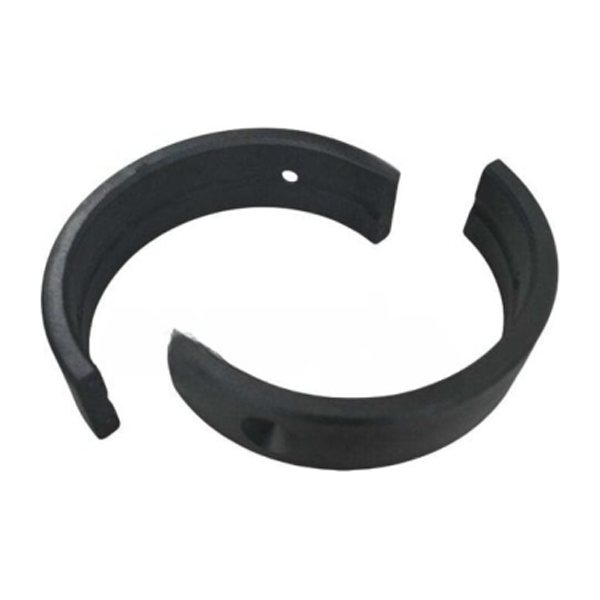

Parts › Bearings & Bushings › 9936-301

Available
Email for a quote
Nissan 9936-301 Mast Support Bushing
| OEM part number | 9936-301 |
| Fits | Nissan |
| Models / notes | LO1 full free frame |
| Category | Bearings & Bushings |
| Type | Aftermarket replacement |
Send us the quantity you need and we'll reply with pricing, usually within 24 hours. Not the exact part? We can source it. Send the part number or a photo.